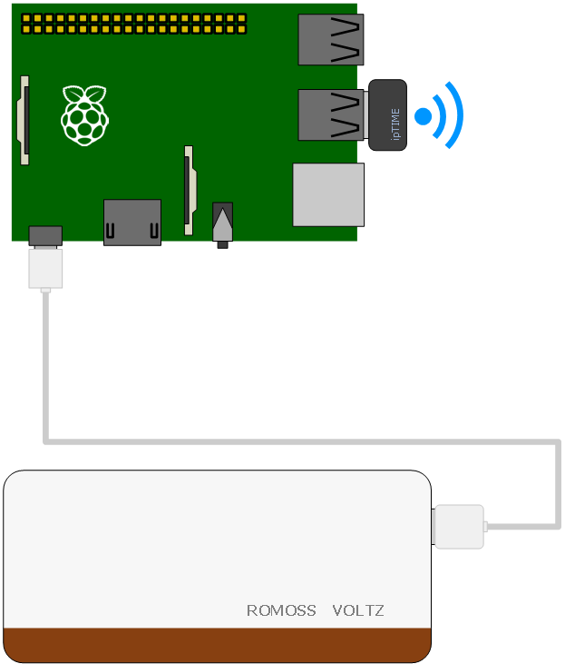
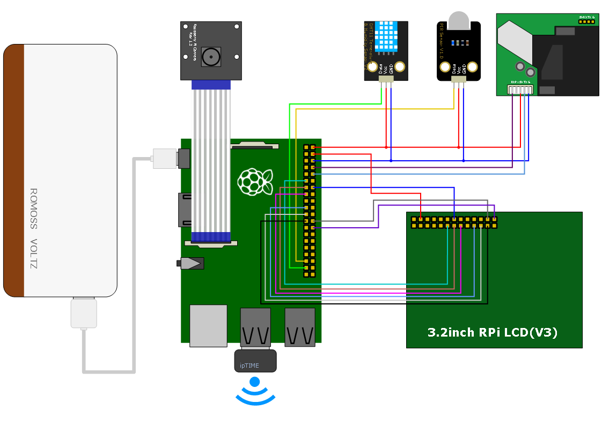

Battery 작동 시간 테스트
Battery 작동 시간 테스트는 2가지 조건을 주고 테스트 하였다. 첫 번째는 Raspberry Pi와 무선 랜카드만 연결하였고,
두 번째는 첫 번째 조건에서 몇가지 센서를 및 LCD를 연결하였다. 테스트 방법은 다음과 같다.
- Battery 잔량 표시 LED가 최대가 될때까지 충전한다. Battery 충전 전원은 계속 연결해 둔다.
- Battery와 Raspberry Pi를 연결하고 부팅 시킨다.
- EPICS IOC를 올리고 PC에서 camonitor를 실행하고 시작 시간을 기록한다.
- Battery 충전 전원을 제거하고 Battery만으로 Raspberry Pi를 작동 시킨다.
- camonitor가 disconnection 되었을 때 시간을 기록한다.
테스트에 사용된 Battery와 Sensor는 다음과 같다.
- Raspberry Pi Model B+
- Raspberry Pi Camera(NoIR Model)
- ROMOSS Voltz VO-10000
- ipTIME N100MINI Wireless LAN
- 3.2inch RPi LCD
- DHT11 Temperature & Humidity ensor
- PIR Motion Sensor
- P1001M Dust Sensor
테스트를 위한 EPICS IOC는 siteLibs 와 siteApps에 있으므로 svn에서 내려 받는다.
pi@raspberrypi ~/epics/R3.14.12.4 $ svn co svn://10.1.5.14/raon/trunk/siteLibs
pi@raspberrypi ~/epics/R3.14.12.4 $ svn co svn://10.1.5.14/raon/trunk/siteApps
필요한 Library는 siteLibs안에 있는 asyn-4-21, stream-2-6, DHT11LibRasp, GPIOLibRasp 이므로 각각의 폴더에
들어가서 make를 실행 한다.
pi@raspberrypi ~/epics/R3.14.12.4/siteLibs/asyn-4-21 $ make
pi@raspberrypi ~/epics/R3.14.12.4/siteLibs/stream-2-6 $ make
pi@raspberrypi ~/epics/R3.14.12.4/siteLibs/DHT11LibRasp $ make
pi@raspberrypi ~/epics/R3.14.12.4/siteLibs/GPIOLibRasp $ make
필요한 Library는 준비가 되었으므로 IOC를 준비한다.
Sensor를 연결하지 않은 경우
센서를 연결하지 않은 경우 하드웨어 구성은 다음과 같다.

별다른 Sensor가 없는 경우에는 기본 GPIO Library를 이용하여 Pin값을 Monitoring하면 된다.
siteApps안에 있는 raspGPIO 폴더로 이동한 후 make를 실행한다.
pi@raspberrypi ~/epics/R3.14.12.4/siteApps/raspGPIO $ make
db 폴더가 없다면 생성 한 후 gpio.db파일을 db폴더 안에 생성한다.
gpio.db
record(bi, "BT:INP1")
{
field(DTYP, "GPIO")
field(SCAN, "1 second")
field(INP, "@1")
field(ONAM, "ON")
field(ZNAM, "OFF")
}
iocBoot/iocgpio 폴더로 이동 후 st.cmd 파일에 gpio.db를 추가해 준다.
st.cmd
#!../../bin/linux-arm/gpio
## You may have to change gpio to something else
## everywhere it appears in this file
< envPaths
cd ${TOP}
## Register all support components
dbLoadDatabase "dbd/gpio.dbd"
gpio_registerRecordDeviceDriver pdbbase
## Load record instances
#dbLoadTemplate "db/userHost.substitutions"
#dbLoadRecords "db/dbSubExample.db", "user=piHost"
dbLoadRecords "db/gpio.db"
## Set this to see messages from mySub
#var mySubDebug 1
## Run this to trace the stages of iocInit
#traceIocInit
cd ${TOP}/iocBoot/${IOC}
iocInit
## Start any sequence programs
#seq sncExample, "user=piHost"
ioc를 실행 파일로 만든 후 실행한다.
pi@raspberrypi ~/epics/R3.14.12.4/siteApps/raspGPIO/iocBoot/iocgpio $ chmod 755 st.cmd
pi@raspberrypi ~/epics/R3.14.12.4/siteApps/raspGPIO/iocBoot/iocgpio $ ./st.cmd
같은 네트워크의 PC에서 camonitor실행 한 후 시간을 기록 한다.
scwook@scwook: camonitor BT:INP1
camonitor BT:INP1
BT:INP1 2014-10-19 22:35:32.436177 FALSE
camonitor 접속이 끝어지면 시간을 기록한다.
CA.Client.Exception...............................................
Warning: "Virtual circuit unresponsive"
Context: "10.1.4.205:5064"
Source File: ../tcpiiu.cpp line 945
GPIO:bi 2014-10-21 04:04:43.435005 *** disconnected
Current Time: Tue Oct 21 2014 04:04:43.434953918
..................................................................
Unexpected problem with CA circuit to server "10.1.4.205:5064" was "No route to host" - disconnecting
CA.Client.Exception...............................................
Warning: "Virtual circuit disconnect"
Context: "10.1.4.205:5064"
Source File: ../cac.cpp line 1215
Current Time: Tue Oct 21 2014 04:20:06.831154499
..................................................................
Sensor를 연결한 경우
센서를 연결한 경우 하드웨어 구성은 다음과 같다.

Sensor가 연결된 경우 각각의 Senosr에 대한 Library와 db파일이 필요하다.
siteApps안에 있는 raspSensors 폴더로 이동한 후 make를 실행한다.
pi@raspberrypi ~/epics/R3.14.12.4/siteApps/raspGPIO $ make
make가 완료되면 db/sensors.db 생성된다.
sensors.db
record(ai, "SS:DHT11:TEM")
{
field(DTYP, "DHT11")
field(SCAN, "1 second")
field(INP, "@25 temperature")
}
record(ai, "SS:DHT11:HUM")
{
field(DTYP, "DHT11")
field(SCAN, "1 second")
field(INP, "@25 humidity")
}
record(ai,"SS:DUST")
{
field(DTYP, "stream")
field(INP, "@sensor.proto get_dust UART")
field(SCAN, "1 second")
}
record(bi, "SS:GPIO:INP24")
{
field(DTYP, "GPIO")
field(SCAN, "1 second")
field(INP, "@24")
field(ONAM, "ON")
field(ZNAM, "OFF")
}
iocBoot/iocgpio 폴더로 이동 후 st.cmd을 실행 한다.
st.cmd
#!../../bin/linux-arm/rasp
## You may have to change rasp to something else
## everywhere it appears in this file
< envPaths
cd ${TOP}
epicsEnvSet "STREAM_PROTOCOL_PATH" "../../proto"
## Register all support components
dbLoadDatabase "dbd/rasp.dbd"
rasp_registerRecordDeviceDriver pdbbase
drvAsynSerialPortConfigure "UART" "/dev/ttyAMA0"
asynSetOption("UART", 0, "baud", "9600")
asynSetOption("UART", 0, "bits", "8")
asynSetOption("UART", 0, "parity", "none")
## Load record instances
#dbLoadRecords("db/xxx.db","user=piHost")
dbLoadRecords("db/sensor.db")
cd ${TOP}/iocBoot/${IOC}
iocInit
## Start any sequence programs
#seq sncxxx,"user=piHost"
pi@raspberrypi ~/epics/R3.14.12.4/siteApps/raspSensors/iocBoot/iocrasp $ ./st.cmd
같은 네트워크의 PC에서 camonitor실행 한 후 시간을 기록 한다.
scwook@scwook: camonitor SS:GPIO:INP24
SS:GPIO:INP24 2014-10-18 07:37:30.337722 FALSE
camonitor 접속이 끝어지면 시간을 기록한다.
CA.Client.Exception...............................................
Warning: "Virtual circuit unresponsive"
Context: "10.1.4.207:5064"
Source File: ../tcpiiu.cpp line 945
Current Time: Tue Oct 18 2014 21:59:22.740138232
..................................................................
테스트 결과
|
Start |
End |
Result |
| 1 |
Without Sensor |
2014-10-19 22:35:32 |
2014-10-21 04:04:43 |
29시간 28분 |
| With Sensor |
2014-10-18 07:37:30 |
2014-10-18 21:59:22 |
14시간 21분 |
| 2 |
Without Sensor |
2014-10-27 08:59:26 |
2014-10-28 13:40:15 |
28시간 40분 |
| With Sensor |
2014-10-30 17:57:27 |
2014-10-31 07:06:25 |
13시간 08분 |